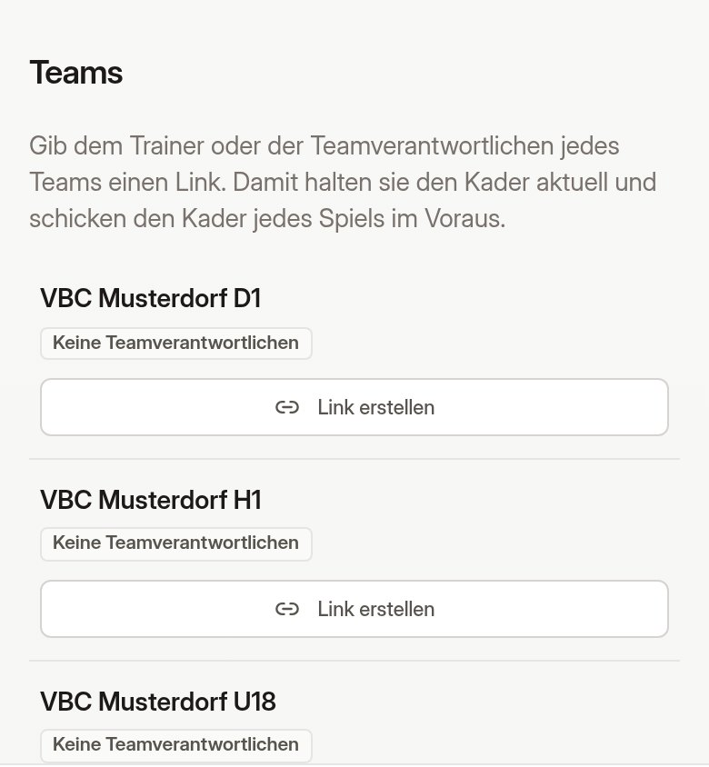
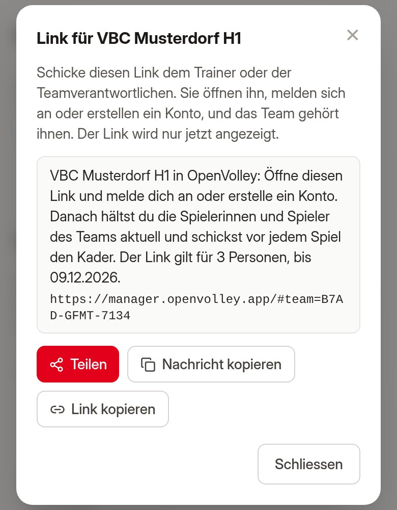
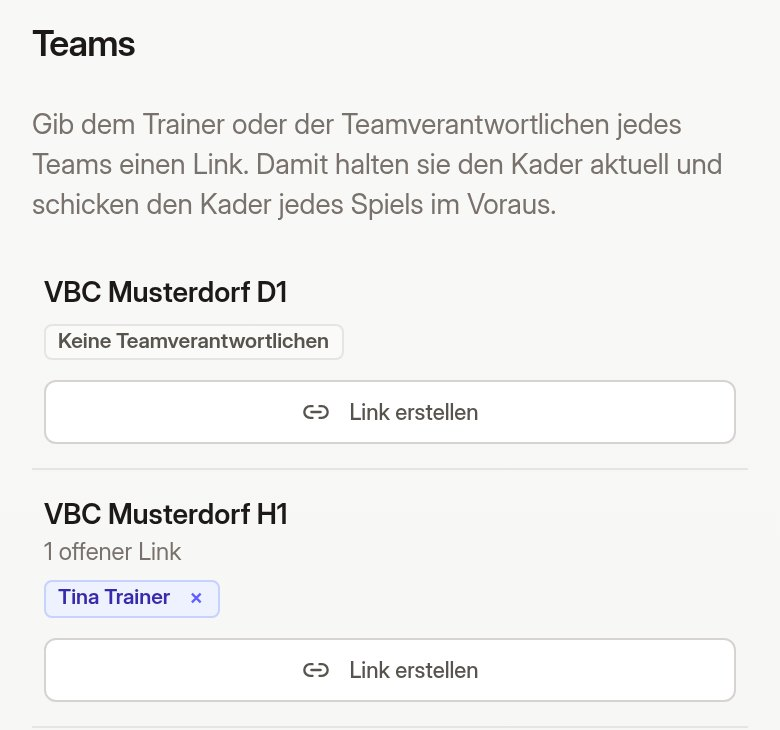

Mit einem Teamlink pflegen die Trainerinnen und Trainer den Kader ihres Teams in OpenVolley und schicken vor jedem Spiel den Kader des Spiels. Das Tablet des Schreibers hat ihn dann in der Halle bereit, auch ohne WLAN. Du verschickst die Links, in fünf Minuten für den ganzen Verein.
1
Anmelden
Öffne manager.openvolley.app und melde dich an, mit demselben Konto wie in der OpenVolley-App.
Unten tippst du auf Mein Verein. Weiter unten stehen unter Teams alle Teams deines Vereins aus dem Spielplan.
Kein Tab „Mein Verein“? Dann bist du noch nicht als Vereinsverantwortliche/r eingetragen. Schreib an support@openvolley.app, mit deinem Verein und der E-Mail-Adresse deines Kontos.

2
Link erstellen und schicken
Tippe beim Team auf Link erstellen. Es erscheint eine fertige Nachricht mit dem Link.
Teilen öffnet WhatsApp, Signal, Mail und Co.: Wähle die Trainerin oder den Trainer.
Nachricht kopieren, um sie selbst einzufügen, zum Beispiel in einen Teamchat.
Der Link wird nur jetzt angezeigt. Er gilt für 3 Personen und 30 Tage. Brauchst du einen neuen, erstellst du einfach noch einen.

Für Vereinsverantwortliche
3
Sehen, wer das Team betreut
Sobald jemand den Link geöffnet und sich angemeldet hat, steht sein Name beim Team.
Mit × beim Namen nimmst du ihm das Team wieder weg. Sein Konto bleibt, nur das Team ist weg.
„1 offener Link“ heisst: Ein Link wurde noch nicht von allen benutzt, für die er gilt.

4
Den Trainerinnen und Trainern die Anleitung geben
Für sie gibt es die zweite Anleitung, „Kader vor dem Spiel schicken“. Schick sie gleich mit dem Link mit.
Was Teamverantwortliche dürfen
Den Kader ihres Teams für die Saison pflegen, auch mit der Einsatzliste aus VolleyManager.
Für jedes Spiel ihres Teams den Kader schicken, heim und auswärts.
Nur ihr eigenes Team. Spiele schreiben können sie damit nicht.
Du selbst
Unter Meine Teams kannst du jedes Team deines Vereins genauso bearbeiten und Kader schicken.
Fehlt ein Team in der Liste, schreib an support@openvolley.app.
In der Halle
Das Tablet des Schreibers lädt die geschickten Kader, solange es Internet hat, für die Heimspiele seines Vereins in den nächsten 7 Tagen.
Der Schreiber tippt auf Akzeptieren und prüft den Kader mit dem Trainer. Änderungen in letzter Minute macht er direkt auf dem Tablet.
Datenschutz
Ein geschickter Kader wird gelöscht, sobald der Schreiber ihn akzeptiert hat, spätestens 14 Tage nach dem Spiel.